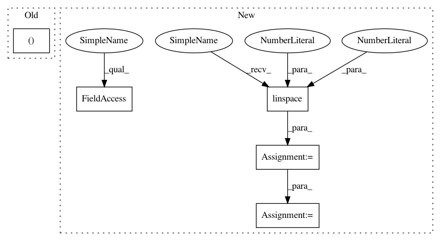

b86b5661fc01a6204b3eb2a455a341e135db8270,general_function/file_wav.py,,,#,211
Before Change
if(__name__=="__main__"):
wave_data, fs = read_wav_data("A2_0.wav")
wav_show(wave_data[0],fs)
//t0=time.time()
After Change
return data_input
x=np.linspace(0, 400 - 1, 400, dtype = np.int64)
w = 0.54 - 0.46 * np.cos(2 * np.pi * (x) / (400 - 1) ) // 汉明窗
def GetFrequencyFeature3(wavsignal, fs):
// wav波形 加时间窗以及时移10ms
In pattern: SUPERPATTERN
Frequency: 3
Non-data size: 5
Instances
Project Name: nl8590687/ASRT_SpeechRecognition
Commit Name: b86b5661fc01a6204b3eb2a455a341e135db8270
Time: 2018-06-15
Author: 3210346136@qq.com
File Name: general_function/file_wav.py
Class Name:
Method Name:
Project Name: scipy/scipy
Commit Name: 5ae662085c1ebae4a42808f1b0490b0065d2767b
Time: 2016-11-13
Author: person142@users.noreply.github.com
File Name: scipy/special/tests/test_mpmath.py
Class Name:
Method Name: test_loggamma_taylor2
Project Name: freelunchtheorem/Conditional_Density_Estimation
Commit Name: 4f9f28da19466e18165feb5a3dab0e82f686b926
Time: 2019-01-13
Author: jonas.rothfuss@gmx.de
File Name: tests/unittests_estimators.py
Class Name: TestConditionalDensityEstimators_2d_gaussian
Method Name: test_LSCD_with_2d_gaussian
Project Name: nl8590687/ASRT_SpeechRecognition
Commit Name: b86b5661fc01a6204b3eb2a455a341e135db8270
Time: 2018-06-15
Author: 3210346136@qq.com
File Name: general_function/file_wav.py
Class Name:
Method Name: